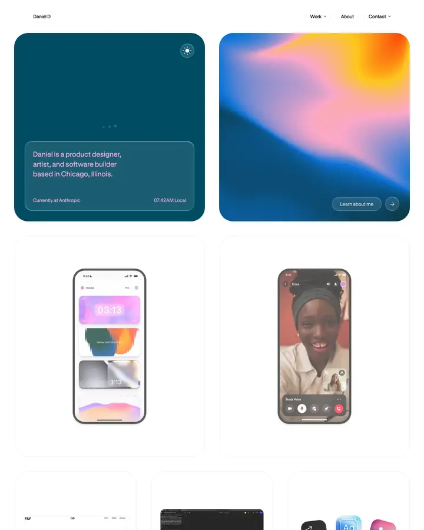
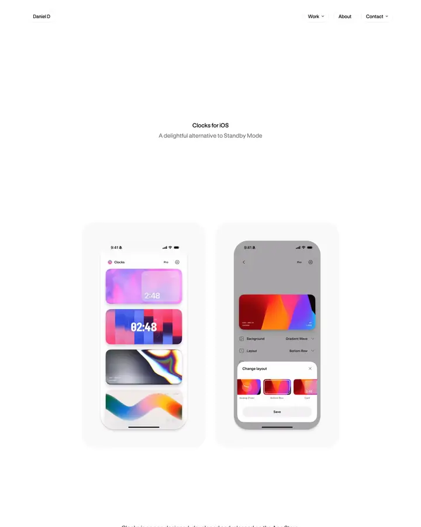
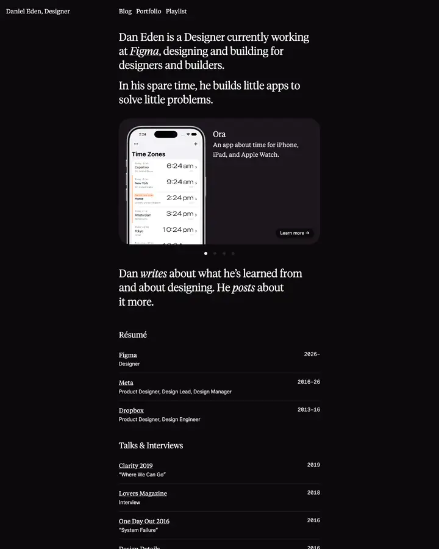
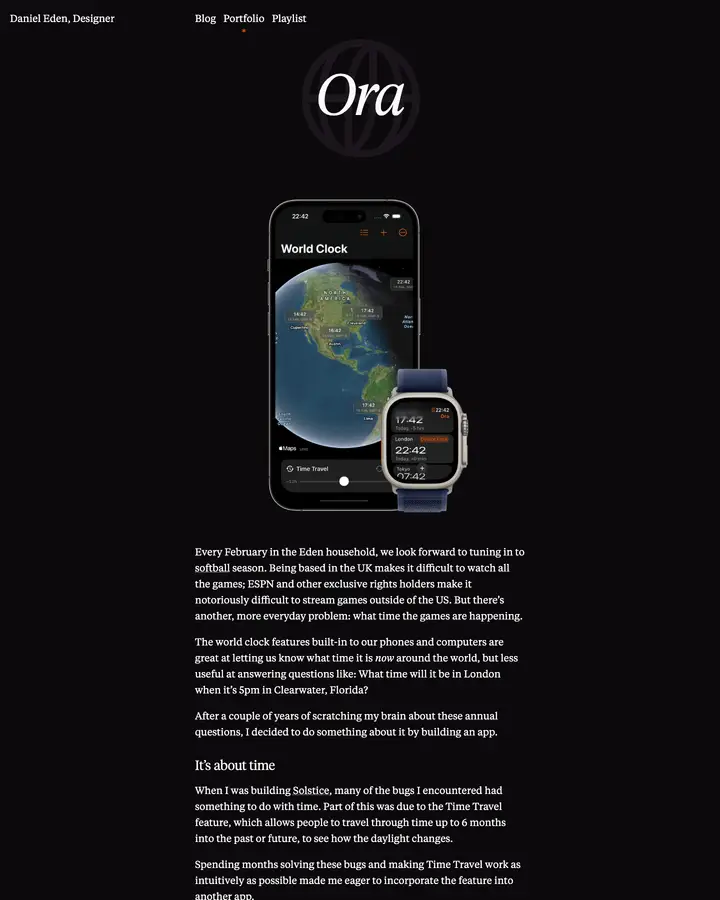
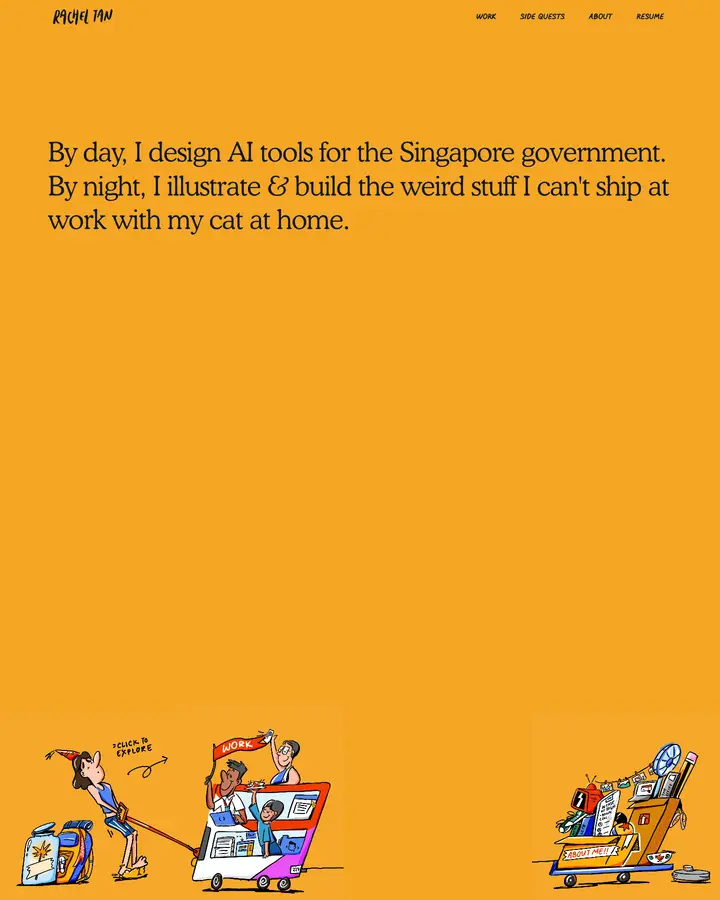
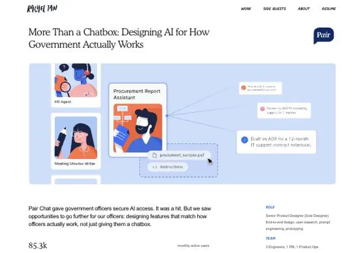
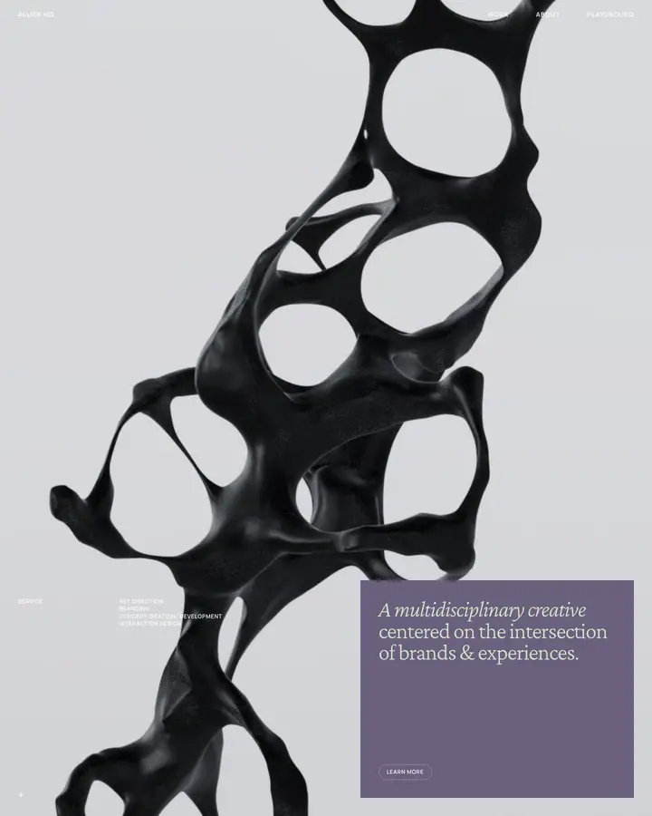
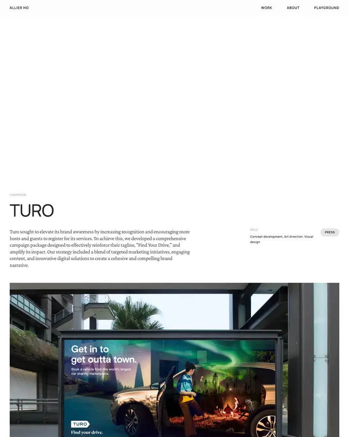

Experiment · PayPal privacy cases · covers after the references · 2026-11-18
The three covers, in each reference's style
Seven portfolios, every style now read off a case page (not a home page). Each row shows the reference's own cover on the left, then our three PayPal covers drawn in that style, then all three at /work tile size. Their style, our screens, words and numbers.
Where each one came from
Home cards invite; case banners arrive
The first version of this page took four styles from home pages, which is why it had a "Read the case" button. Rows 01–03 were already from case pages. Rows 04–07 are now redrawn from each site's case page. On every one of these sites, the home card is an invitation (a card, a name, a line, a button) and the case banner is the arrival: the work shown large, the title outside the image, no button.
danield.design


Home: one phone in a bordered tile. Case: title and line centred above, two phones in soft grey boxes.
daneden.me


Home: a dark card, phone cut off, name, line, "Learn more". Case: the name large in italic serif, the devices on the page’s ground, no card.
rachelatwork.com


Home: a bold colour field and her characters. Case: title outside, a soft band composing illustrations with UI fragments.
allierho.com


Home: a 3D object and a purple panel with "Learn more". Case: type first, then a full-bleed photo of the work in use.